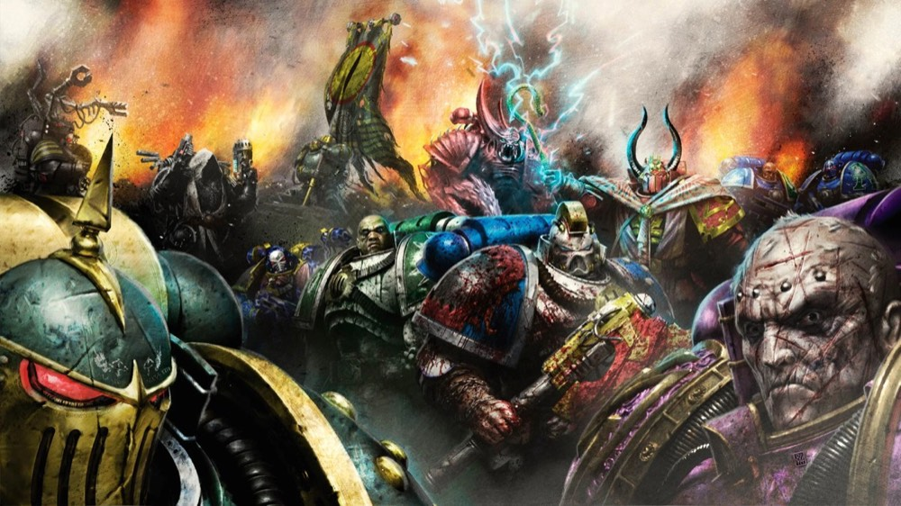

Chaos Space Marines
| Chaos Space Marines Heretic Astartes | |
|---|---|
The eight-pointed star, the common sign of the Traitor Legions Artwork © Games Workshop | |
| Origin | The nine Traitor Space Marine Legions of the Horus Heresy (005–014.M31) and later renegade Space Marine Chapters |
| Allegiance | Chaos: Chaos Undivided, Khorne, Nurgle, Tzeentch or Slaanesh |
| Base | The Eye of Terror; the Maelstrom; the Great Rift |
| Warmaster | Abaddon the Despoiler (since c. 781.M31)[a] |
| Organisation | Legions, warbands and renegade Chapters led by Chaos Lords |
| Aim | The Long War against the Imperium and the Emperor |
| Traitor Legions | |
| Emperor's Children (III), Iron Warriors (IV), Night Lords (VIII), World Eaters (XII), Death Guard (XIV), Thousand Sons (XV), Sons of Horus and Black Legion (XVI), Word Bearers (XVII), Alpha Legion (XX) | |
| Notable campaigns | |
| Siege of Terra (014.M31); Legion Wars; the Black Crusades; the Badab War (901–912.M41); the Thirteenth Black Crusade (999.M41); the Arks of Omen (early M42) | |
Chaos Space Marines, called in Imperial records the Heretic Astartes or Traitor Astartes, are Space Marines who have renounced their allegiance to the Emperor of Mankind and serve the powers of Chaos. Most are the warriors of the nine Traitor Legions who followed the Warmaster Horus in the Horus Heresy of the 31st millennium. Others are the warriors of loyal Chapters who have turned renegade in the ten thousand years since. They are among the most dangerous enemies the Imperium has: they have the strength, training and wargear of Space Marines, and the gifts of the Dark Gods besides.[1][2]
After the defeat at the Siege of Terra in 014.M31 and the Great Scouring that followed, the Traitor Legions fled into the Eye of Terror, where time runs strangely and many veterans of the Heresy still live. There they fought one another in the Legion Wars, and the Legions broke apart into warbands. From the Eye, and from other warp rifts such as the Maelstrom, they have raided the Imperium ever since in what they call the Long War.[1]
The Warmaster Abaddon the Despoiler has led thirteen Black Crusades out of the Eye. The thirteenth, in 999.M41, destroyed Cadia and opened the Great Rift, and in the Era Indomitus the Traitor Legions and their allies have been at war on a scale not seen since the Heresy itself.[3]
History
[edit]The Heresy
[edit]
Nine of the eighteen Legions of the Great Crusade turned against the Emperor between 005.M31, when the Warmaster's rebellion was declared at Isstvan III, and the Siege of Terra in 014.M31. The causes differed: the Word Bearers had worshipped the Dark Gods for decades, the World Eaters followed their primarch Angron into rage, the Thousand Sons were driven to rebellion by the Burning of Prospero, and the Alpha Legion's reasons are still debated. Not every Legionary of the Traitor Legions turned; the loyalists among them were purged at Isstvan III and the Drop Site Massacre, and some escaped to fight for the Emperor.[2]
The Traitors were defeated when Horus was killed aboard the Vengeful Spirit in 014.M31. In the years that followed, the loyal Legions hunted them across the galaxy in the Great Scouring until the survivors reached the Eye of Terror.[2]
The Legion Wars
[edit]In the Eye the Legions turned on each other. Imperial and captured accounts describe centuries of fighting between Legions over worlds, slaves, gene-seed and relics. The Emperor's Children and the World Eaters fought for the daemon world Skalathrax, where Khârn the Betrayer broke his own Legion; the Sons of Horus were driven from their stronghold, and Horus's cloned body was destroyed. From the ruin Ezekyle Abaddon built the Black Legion, which absorbed warriors from every Legion.[1][4]
The Long War
[edit]The Traitors have raided the Imperium throughout its history. The great campaigns are the Black Crusades, the first of which Abaddon launched in 781.M31. Most failed to win lasting territory, but each served a purpose that only became clear with the thirteenth. Between the crusades, countless warbands have struck at Imperial worlds on their own account.[1]
Renegade Chapters
[edit]Not all Chaos Space Marines are Heresy veterans. Chapters founded after the Heresy have fallen, among them the Red Corsairs, once the Astral Claws, whose master Huron Blackheart led them into rebellion in the Badab War of 901–912.M41, and the Purge. Renegades often begin by defying the Imperium for reasons of pride or grievance and fall to the Dark Gods later.[1][5]
The Thirteenth Black Crusade
[edit]In 999.M41 Abaddon launched the Thirteenth Black Crusade. The Traitor Legions, renegades and daemons broke through the Cadian Gate, and the Fall of Cadia destroyed the pylons that had restrained the Eye of Terror. The Great Rift opened across the galaxy, the Noctis Aeterna followed, and the Imperium was cut in two.[3]
Era Indomitus
[edit]
Since the opening of the Rift the Traitor Legions have struck at both halves of the Imperium. The Death Guard waged the Plague Wars against Ultramar; the daemon primarch Angron was reborn and led the World Eaters on a crusade aimed at Terra; Abaddon's Black Legion pursued the Despoiler's campaigns through the Imperium Nihilus. In the early 42nd millennium the Arks of Omen campaign saw Abaddon seek the daemon-smith Vashtorr the Arkifane and the hidden Blackstone Fortresses. Imperial commanders of the Indomitus Crusade report that renegade Chapters, cut off by the Rift, have fallen in numbers not recorded since the Age of Apostasy.[3][1]
Organisation
[edit]The Legions that survived the Legion Wars intact are few. The Death Guard, the Thousand Sons, the World Eaters and the Emperor's Children each follow a single god and retain some of their Legion structure. The rest are scattered among warbands of a few dozen to a few thousand warriors, led by a Chaos Lord and kept together by loyalty, fear, plunder or the promise of glory. Warbands frequently mix warriors of several Legions, renegades, mutants, cultists and daemons.[1]
Among their specialists are Sorcerers, the psykers of the Traitors; Dark Apostles, priests of the Dark Gods who descend from the Word Bearers' Chaplains; Warpsmiths, who hold the Traitors' war machines together; the Possessed, who share their bodies with daemons; the Chosen, elite veterans; and the Obliterators and Mutilators, fused with their weapons by a techno-virus. Their armour ranges from Heresy-era patterns maintained for ten thousand years to plate warped by the Warp into living things.[6]
Beliefs
[edit]Most Chaos Space Marines serve Chaos Undivided, honouring all four gods. Others follow one. Ordo Malleus interrogators record a great range of belief, from fanatical worship to cold use of the gods' gifts in pursuit of revenge on the Emperor. Many Heresy veterans still describe their war as a rebellion against a false god and a tyranny, and some reject the name of "Chaos" altogether.[1]
The gods reward those who please them with gifts, which may be power, mutation or both. A favoured champion may rise to become a Daemon Prince, immortal in the Warp. Most who seek that end become instead a mindless Chaos Spawn.[1]
Gene-seed and recruitment
[edit]The Traitor Legions lost their means of creating new Space Marines in the Great Scouring, and gene-seed is the most valuable thing they possess. They recruit from captured or stolen Imperial gene-seed, from renegade Chapters, and with the help of Fabius Bile, whose experiments have made many new Traitor Astartes. Their recruits are commonly taken from the populations of the worlds of the Eye. Some warbands raid Space Marine fortress-monasteries specifically to steal gene-seed.[1][6]
Relations with the Imperium
[edit]
The Imperium has never acknowledged that half the Legions betrayed the Emperor. Public Imperial teaching describes the Traitors as heretics and daemon-worshippers, and records of the Heresy are sealed by the Inquisition. The Ordo Malleus and the Grey Knights study them; the loyal Chapters, above all the Dark Angels, who keep secrets of their own, hunt them.[1]
Timeline
[edit]| Date | Event |
|---|---|
| 005.M31 | The Horus Heresy begins at Isstvan III |
| 014.M31 | Siege of Terra; death of Horus; the Traitors retreat |
| c. 014–c. 100.M31 | The Great Scouring |
| M31–M32 | Legion Wars in the Eye of Terror; founding of the Black Legion |
| 781.M31 | The First Black Crusade |
| 901–912.M41 | The Badab War; the Astral Claws become the Red Corsairs |
| 999.M41 | The Thirteenth Black Crusade; Fall of Cadia; Great Rift |
| Early M42 | Plague Wars; Angron's crusade towards Terra; the Arks of Omen |
See also
[edit]Notes
[edit]- ^ The year in which Abaddon took the title is disputed; Ordo Malleus records place his claim in the late 31st millennium, after the destruction of Horus's body. See Legion Wars.
References
[edit]- ^ a b c d e f g h i j k Codex Adeptus Astartes - Space Marines (8th Edition), pp. 18-19, 62, 128. Games Workshop. Codex Heretic Astartes - Chaos Space Marines (8th Edition) (Revised Codex), pp. 6-16, 18-25, 62, 128. Games Workshop.
- ^ a b c Codex Heretic Astartes - Chaos Space Marines (8th Edition), pp. 12-16, 20-21, 22-25, 67, 162-163. Games Workshop. Psychic Awakening - Faith & Fury (8th Edition), pg. 59. Games Workshop.
- ^ a b c (novel), Dan Abnett. Eisenhorn. Black Library. McNeill, Graham. Dead Sky, Black Sun (novel). Black Library.
- ^ Codex: Chaos Space Marines (6th Edition), pp. 5-20, 22-25, 28-64. Games Workshop. Codex: Space Marines (5th Edition), pp. 5-50. Games Workshop.
- ^ Codex: Chaos Space Marines (4th Edition), pp. 6-22, 25-58. Games Workshop. Codex: Chaos Space Marines (3rd Edition, 2nd Codex), pp. 2-12, 21-38. Games Workshop.
- ^ a b Codex: Eye of Terror (3rd Edition), pp. 4-16. Games Workshop. Bligh, Alan. The Horus Heresy - Book One: Betrayal. Black Library, pp. 10-30, 64-120.